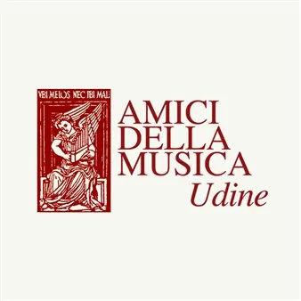

da ven 16 ott a ven 16 apr
105ª stagione di concerti degli Amici della Musica di Udine 2026-2027
La stagione concertistica degli Amici della Musica di Udine propone musica da camera e programmi che attraversano repertori classici, jazz e colonne sonore.
 Indicazioni
Indicazioni
- Costi e prenotazioni
- Costo non indicato · Prenotazione non indicata
- Programma
- Programma raccolto. Gli appuntamenti delle diverse schede sono riuniti in questa pagina.
- In caso di maltempo
- Nessuna indicazione specifica pubblicata.
- Note
- Le schede dei singoli appuntamenti sono state unite nella manifestazione principale.
L’EVENTO
Descrizione completa
La Stagione si apre con una accattivante e sorprendente proposta che unisce uno dei quartetti d’archi piu' rinomati nel mondo musicale alla freschezza dei giovani archi del Conservatorio J. Tomadini e alla soavità della danza intrecciata dai giovani studenti del Liceo coreutico di Udine
Penderecki String Quartet / Orchestra d’archi Tomadini
Jeremy Bell violino Jerzy Kapłanek violino Christine Vlajk viola Katie Schlaikjer violoncello
Musiche di Mozart, Beethoven, Penderecki
Tutti i concerti al Teatro Palamostre iniziano alle ore 19.22 per ricordare che l’Associazione è stata fondata nel 1922 Stagione di concerti dedicata alla memoria di Enzo Barazza
Biglietti disponibili su Vivaticket e presso le rivendite autorizzate
Concerti Torriani ‘Solo musica italiana’
Miranda Mannucci violino Sofia Dindo pianoforte
Musiche di Respighi, Pizzetti, Mannucci, Zoccatelli
Biglietti
intero 10€
studenti 3€
Dalle colonne sonore al jazz, dagli chansonnier ai cantautori, un programma allargato al pubblico piu’ diverso che raccoglie luoghi di memoria e della grande epoca di cantautori italiani ed europei
Note d’Autore Quintet
F. Rosciglione voce, M. Cappello pianoforte, P. Ranucci contrabbasso, G. Tirabassi batteria, R. Dousset flauto Tiziana Arina e Mariano Navone ballo
Dalle colonne sonore al jazz, dagli chansonnier ai cantautori
IL PROGRAMMA
Programma e orari
Le singole date appartengono alla stessa manifestazione. Ogni sede verificata dispone delle proprie indicazioni.
Da Venerdì 16 ottobre a Venerdì 16 aprile · 105^ stagione di concerti di Amici della musica 2026-2027
Udine · Teatro Palamostre Torre di Santa Maria
- 16 OTTOBRE 2026 Teatro Palamostre, ore 19:22 La Stagione si apre con una accattivante e sorprendente proposta che unisce uno dei quartetti d’archi piu' rinomati nel mondo musicale alla freschezza dei giovani archi del Conservatorio J. Tomadini e alla soavità della danza…
Venerdì 30 ottobre · 105^ stagione di concerti di Amici della musica
Udine · Torre di S. Maria Via Zanon
- 30 OTTOBRE 2026 Torre di S. Maria ore 17.00 Concerti Torriani ‘Solo musica italiana’ Miranda Mannucci violino Sofia Dindo pianoforte Musiche di Respighi, Pizzetti, Mannucci, Zoccatelli Biglietti intero 10€ studenti 3€
Mercoledì 4 novembre · 105^ stagione di concerti di Amici della musica
Udine · Teatro Palamostre Piazzale Paolo Diacono
- 4 novembre 2026 Teatro Palamostre, ore 19:22 Dalle colonne sonore al jazz, dagli chansonnier ai cantautori, un programma allargato al pubblico piu’ diverso che raccoglie luoghi di memoria e della grande epoca di cantautori italiani ed europei Note d’Autore Quintet F. Rosciglione…
INFORMAZIONI UTILI
Prima di partire
- Controllare la fonte prima di partire.
ORGANIZZAZIONE